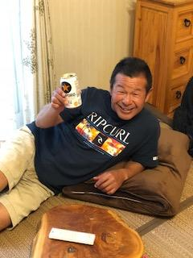
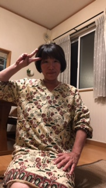
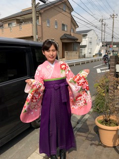

 父の趣味はサーフィン。毎週必ずサーフボードを手に海に向かう。 父の好きなところは、誰にでも優しくいつもニコニコしているところ。
 母の趣味はスポーツをカメラに収めること。私のソフトボール部の専属カメラマン。 母の好きなところは、厳しいけど情に熱くいつも一生懸命なところ。
 姉の趣味は福岡ソフトバンクホークスを応援すること。日本中を飛び回って応援している。 姉の好きなところは、気配りができ、いつも相談に乗ってくれるところ。